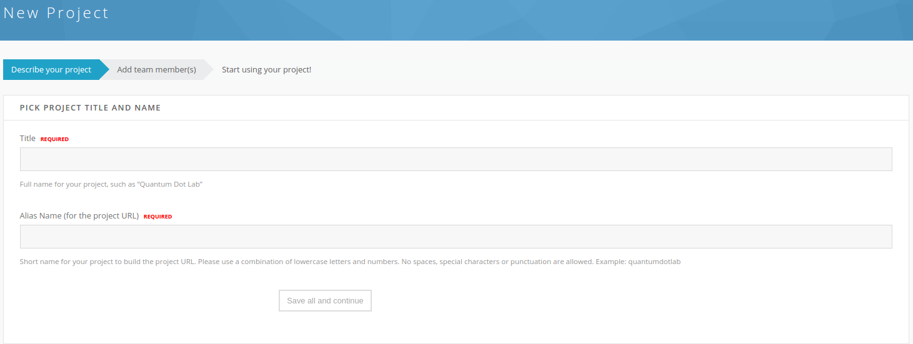
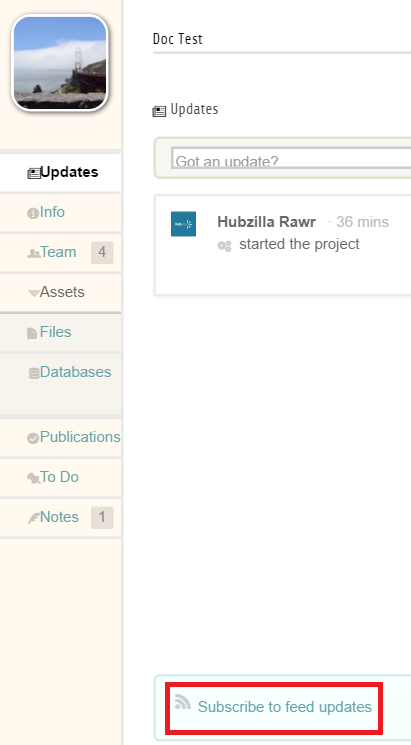
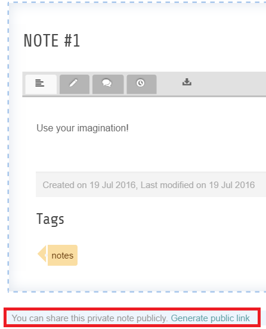
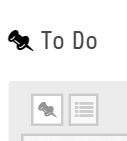
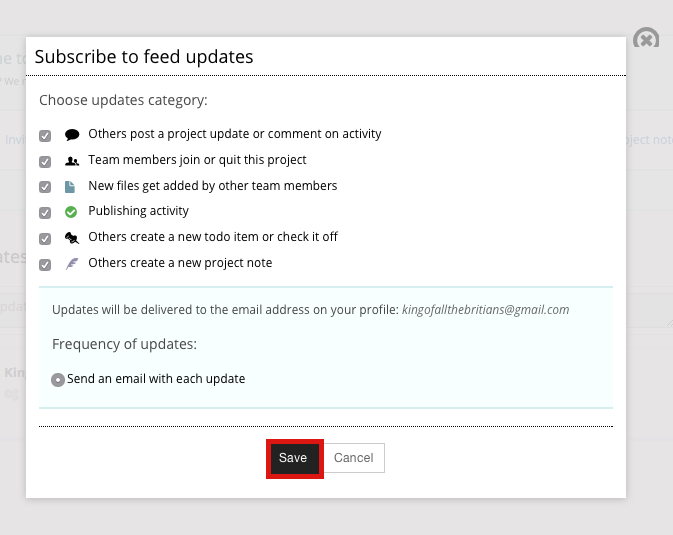
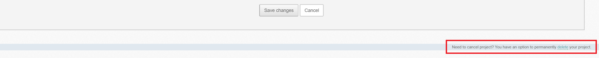

Hub users
Projects
A project is a private workspace you and a few colleagues share on the hub: a file area, a place for notes, a to-do list, an activity feed, and — where the hub offers them — data stores and a route to publishing your work. You create a project yourself, you decide who is on the team, and nothing in it is visible to anyone else unless you make it so.
Projects live at /projects on the hub. The Learn more button on that
page opens /projects/features, the hub's own tour of what a project can do.
Finding your projects
Go to /projects. The page has two halves. The top explains what a project
is and offers Start a project and Learn more; the My Projects
section below lists every project you belong to. If you are not logged in,
that section asks you to log in first.
Browse public projects, at the top right, lists the projects whose owners have made them public. You can search the list, sort it by title or owner, and filter it to show archived projects.
Starting a project
Setup is a short wizard. By default it has two steps — Describe your project and Add team member(s) — and a third, One last thing..., appears only on hubs that have turned on the agree-to-terms screen. The progress bar at the top of each step shows where you are.

Step 1: describe your project
- Select Start a project.
- Type the project's full name in Title — for example, Quantum Dot Lab.
- Type a short name in Alias Name (for the project URL). Use lowercase
letters and numbers only: no spaces, punctuation, or special characters.
The alias becomes the project's address,
/projects/<alias>, and cannot be changed afterwards. The form checks the name as you type and suggests an alternative if it is taken. - Answer Would you like to provide more information about your project? with Yes, I'll do it now to fill in the rest of the step, or No, later to skip straight to the team.
- In About, describe the project. This is what visitors see if the project is public.
- Under Include project in search? choose one:
- Project is hidden from search and listings (private project)
- Anyone can find this project in search & listings and view its basic information (public project)
- Under Add a project picture, upload an image to use as the project's thumbnail.
- Select Save all and continue.
Step 2: add team members
The second step is the team editor. Add people now or leave it empty and come back later — you are already a member, as the project's manager.
- Choose the role for the people you are about to add: manager, collaborator, or reviewers.
- Type a name in Individual, or an email address to invite someone who has no account on the hub yet. Type a group name in User group to add everyone in a hub group at once. Both boxes suggest matches as you type; pick one from the list.
- Select add.
- Repeat for each person or group. The table below the form lists everyone on the team.
- Select Save all and continue.
The three roles are:
| Role | Can |
|---|---|
| Manager | Invite and remove team members, change project information and settings, and everything a collaborator can do |
| Collaborator | Upload and manage project files, edit project publications, use the project's tools such as notes and to-do items |
| Reviewer | View files, publications, notes, to-do items and team members. Read only |
Step 3: agree to terms
Where the hub has enabled it, a final screen asks you to accept the hub's privacy terms before the project opens. Depending on how the hub is configured it may also ask:
- Are you planning to upload datasets containing any sensitive or restricted data? — either as a single acknowledgement that the project will not hold sensitive data, or as a set of checkboxes for export-controlled data, IRB-governed data, HIPAA-protected health information, and FERPA-protected student records. Ticking one of the latter two may add an extra acknowledgement you have to confirm.
- Grant information — grant title, PI, award number, agency and budget, if the hub collects it.
Tick the box next to Yes, I read, understand and acknowledge the privacy terms, then select Save all and continue. The project opens.
On hubs that require approval for sensitive-data projects, answering yes to the export, HIPAA, or FERPA questions puts the project into pending approval instead. An administrator reviews it before it becomes active.
Inside a project
Each area of a project is a tab. Which tabs you see depends on which project plugins the hub has enabled and configured:
| Tab | What it is |
|---|---|
| Updates | The activity feed: a stream of what everyone on the team has done, with a box to post your own update and comment on others |
| Info | The project description, and the grant information if the hub collects it |
| Team | The member list and, for managers, the team editor |
| Files | The project's file area. See Project files |
| Databases | Searchable tables built from a spreadsheet. See Databases |
| Notes | Wiki-style pages for anything the team needs to write down |
| To Do | Shared task lists |
| Publications | Drafts and released versions of work published from the project |
Two more plugins ship but add no tab of their own: Projects - Watch provides the feed subscription described below, and Projects - Links supplies external content that publications can cite.
The tabs sit in a menu down the left of the project page. Where the hub uses the extended page layout instead, they run across the top and Files and Databases are grouped under an Assets heading.

At the top right of every project page is your role in it — Project manager, Project collaborator, or Project reviewer. Hover over it for the menu of project-wide actions: Edit project, Invite people to join, View public profile (public projects only), and Leave this project.
Editing project information
- Open the project.
- Hover over your role at the top right and select Edit project.
- Change the Title and edit the description in About.
- To change the thumbnail, choose a file under Upload new image and select Upload. It replaces the existing one.
- Select Save changes.
Managers can always do this. On hubs that allow it, collaborators can edit the description too.
The alias cannot be changed. Ask the hub's support staff if a project's address has to move.
The team
The Team tab lists everyone on the project with their role, when they joined, when they last visited, and — for members who came in through a hub group — which group. The list itself is read-only, except that a manager sees Approve request and Deny request beside anyone who has asked to join.
Managers get an Edit Team button above the list. It opens the same editor used during setup: add people, change a member's role by selecting it, tick the boxes beside members and select delete to remove them. Under Project owner in that editor, Edit hands the project to someone else.
Any member of a project with more than one member can leave it: hover over your role at the top right and select Leave this project.
Group-owned projects
A project can be owned by a hub group rather than by a person. In a group-owned project the team editor offers a choice:
- Include all group members. Everyone in the group has project access for as long as their group membership lasts, and cannot be removed individually.
- Specify membership. You choose which group members get access.
Add people from outside the group in the usual way.
Notes
The Notes tab is a small wiki. Create a page, write in it, tag it, and comment on it. Each note keeps its history, so you can see what changed.
A note is private to the team until you share it. At the bottom of a note, select Generate public link. The pop-up gives you an address anyone can open — paste it into email, chat, or a web page. Select Close this to dismiss the pop-up. In a public project you can also choose whether the note is listed on the project's public page or reachable only by its link.

To Do
The To Do tab holds the project's task lists. Add an item, assign it to someone, and check it off when it is done. Two buttons above the list switch the layout: Pinboard view shows items as cards you can drag to reorder, List view stacks them as rows. Both show the newest first.

The sidebar lists the project's to-do lists. My to do's is a built-in list of everything assigned to you; you cannot add to it directly, because it fills itself from items assigned to you elsewhere. Select Add to make a list of your own, and pick a list when you create an item.
Following what happens
Everything the team does shows up on the Updates tab. To get it by email as well, find the Subscribe to feed updates box in the sidebar of a project page and select it.

Tick the categories you want to hear about — project updates and comments, team changes, new files, publishing activity, new to-do items, new notes — and select Save. Mail goes to the address on your hub profile. Come back to the same box, now labelled Manage feed subscription, to change or cancel it.
Some hubs subscribe members automatically when they join a project; in that case the box lets you opt out.
Deleting a project
Deleting a project is a manager's job and it cannot be undone from the front end.
- Hover over your role at the top right and select Edit project.
- Under Need to cancel this project? in the left column, select Delete.
- Confirm with Yes, delete.

The project disappears from your list and from search, and the hub revokes the file-system access that went with it. The files themselves stay on the hub's disk. If you delete a project by mistake, ask the hub's support staff: an administrator can still reach it.
Archiving is the gentler option, and only an administrator can do it. An archived project keeps its files and stays readable, but nobody can change it.
What administrators control
Much of what a project offers is set hub-wide, not per project: which tabs exist, how much disk space a project gets, whether the setup wizard asks about sensitive data or grants, and which external storage providers a project can connect to. Those settings are described in Projects and Project file connectors in the managers book.
Project files
The Files tab is the project's file area. Everyone on the team sees the same files; managers and collaborators can change them, reviewers can only read them. This chapter covers browsing and managing those files, the disk quota they count against, and connecting a project to storage the hub does not own.
Browsing
The Files tab opens a plain file list: Name, size, and Modified. Select a folder name to go into it, and use the breadcrumb trail at the top of the list to come back out. Sort by name, size, or modified date by selecting a column heading.
Selecting a file name opens it — an image or a PDF previews in the page, anything else downloads. Where the hub has set up tool handlers for a file type, extra entries appear beside the name to open the file in that tool.
A file whose modified time shows as N/A has no timestamp the hub could
read. A file marked -- untracked -- is in the project directory but not
recorded in its repository.
Adding and managing files
The row of controls above the list appears for managers and collaborators:
| Control | What it does |
|---|---|
| Upload | Add files to the folder you are in |
| New Folder | Create a folder |
| Download | Download the ticked files and folders |
| Move | Move the ticked items to another folder |
| Delete | Delete the ticked items |
| Rename | Rename the ticked item |
| Preview | Compile a LaTeX document to PDF, if the hub has LaTeX enabled |
Tick the box at the left of each row to choose what Download, Move, Delete, and Rename act on.
Uploading
- Open the folder you want the files to land in.
- Select Upload.
- Drag files onto the drop area, or select it and pick files from your computer. Hold Ctrl (Cmd on a Mac) to pick more than one.
- To have
.zipand.tararchives unpacked as they arrive, tick Uploading archive files (.zip, .tar)? Check the box to expand uploaded archive(s). - Select Upload now!.
The maximum size for one file is shown under the drop area; it is a hub-wide setting and 100 MB by default. If the drag-and-drop uploader gives you trouble, the basic upload link below the button falls back to a plain form.
File history
Where a project's file repository tracks versions, the date in the Modified column is a link. Select it to open File History for that file: every revision with its time and author, a Change column, a Download link for each old version, and — for text files — Diff Revisions to compare two of them. A By column in the file list shows who last touched each file.
Version tracking is a per-project setting, and in Hubzero 2.4 new projects are created with it switched off. In a project without it:
- The Modified date is plain text, not a link, and there is no file history, no diff, and no restore.
- Deleted files are gone; there is no Show Deleted Files view.
- The file list has no By column.
Nothing in the front end turns version tracking on. If your project needs it, ask the hub's support staff.
Disk usage and quota
Every project has a disk quota. At the bottom left of the file list is a Disk usage: bar and the project's Project Quota. The bar turns to a warning colour as you approach the limit.
Select the bar to open the Disk Usage page. It shows the quota, the percentage used, and a breakdown:
- Files — the size of the files currently in the project.
- Version History — space taken by earlier revisions, on projects that track versions. Revision history counts against the quota.
- Unused space — what is left.
The default quota is set hub-wide; an administrator can raise it for one
project. To ask for more space, open a support ticket at
/support/tickets (see Support) and say what the
project is, roughly how much space you need, and why. Hubs that run
grant-funded work usually also want the grant title, PI, agency, and award
number.
Connecting external storage
A project can browse storage the hub does not own — a Google Drive folder, a Dropbox account, a GitHub repository, an S3 bucket — in the same file interface. The files stay with the provider; the hub keeps only a name, a provider, and a credential.
Four providers ship with Hubzero 2.4:
| Provider | What you supply |
|---|---|
| Google Drive | Nothing on the form. You sign in to Google the first time the connection is opened |
| Dropbox | Nothing on the form. You sign in to Dropbox the first time the connection is opened |
| GitHub | Repository, as vendor/repository. Public repositories are read without signing in |
| AWS S3 | Access Key ID, Secret Access Key, Endpoint Region, Bucket Name, and optionally Directory to connect |
Creating a connection
You need to be a manager of the project.
- Open the project's Files tab. Where the hub is set up for it, the tab opens on the connections view: the project's own repository, then one card for each connection, then a New Connection drop-down.
- Choose the provider from New Connection.
- Give the connection a Name.
- Fill in any per-connection fields from the table above.
- Tick Share connection with everyone in the project? to let the whole team use it, or leave it clear to keep it to yourself.
- Select Save.
- Open the connection. For Google Drive, Dropbox, and private GitHub repositories the hub sends you to the provider to grant access, then brings you back.
Each connection card carries Refresh Connection Credentials, for when a stored token has expired, Refresh Connection Path, Edit, and Delete. Connections that are not shared are marked as private.
Once connected, browse, upload, download, move, rename, and delete work much as they do in the project's own file area.
Only a project manager can authorise a connection, and only with their own provider account. A hub administrator cannot do it for you: the handshake attaches the authorising person's account to a connection the whole project may use.
Databases
A project database — DataStore Lite — turns a spreadsheet in your project's
files into a searchable, sortable table anyone on the team can browse. You
upload a .csv file, tell the hub what each column holds, and the hub builds
a real database table from it and opens it in the hub's DataViewer.
You need to be a manager or a collaborator on the project. Reviewers can see the databases a project has but cannot create, update, or delete them.
If there is no Databases tab
The Databases tab is not a standard part of a project. It comes from the Projects - Databases plugin, which needs two MySQL accounts that only a hub administrator can set: a read/write account that builds the tables and a read-only account that the DataViewer uses to read them.
If either account is missing or wrong, the plugin hides the tab entirely. There is no error message and no explanation — the tab simply is not there:
// Hide section completely if not configured
if ($this->_checkConfig() == false)
{
return $area;
}
So if your project has no Databases tab, one of three things is true: the plugin is disabled, the hub has restricted it to a list of projects that does not include yours, or its database accounts are not configured. All three are for an administrator to fix; see Projects in the managers book, and ask the hub's support staff.
A configured tab can still fail at the last step. If the databases list loads but selecting a database's title gives you an error rather than a table, the read-only account exists but cannot read what the read/write account created. That is also one for the administrator.
Preparing the spreadsheet
The source has to be a .csv file — comma-separated values, which every
spreadsheet program can save.
- The first row holds the column labels.
- Every row below it is one record.
- To link a database row to a file in the project, put the file's name and
extension in a column, spelled exactly as the file is —
projectstep1.png, notProjectStep1.PNG. The file has to be in the same folder as the.csvor in a folder below it.
Creating a database
Upload the file
- Open the project and select Files.
- Select Upload.
- Drag the
.csvfile onto the drop area, along with any images or documents the database will link to. Select Upload now!.
See Project files for more on uploading.
Step 1: select the file
- Select Databases.
- Select Create a database.
- Pick the
.csvfile from the drop-down. It lists every.csvfile in the project, grouped by folder. - Select Next ».
If the drop-down is empty, the project has no .csv files, or the only ones
it has are already used by a database. The screen offers links back to the
databases list and to the file area.
Step 2: verify data
The hub reads the file, guesses a type for each column, and shows a preview. The heading tells you how many records the file holds and how many are shown — the preview loads the first hundred rows, but the database is built from all of them.
Select the edit control in a column heading to open Column Properties, which has three tabs.
General
| Field | What it does |
|---|---|
| Label | The column heading. Required |
| Description | Shown when a reader selects the column title |
| Width | A pixel value. The column is held to that width |
| Truncate text at width | Cuts the text off at that width |
| Units | A unit of measure — inches, meters, liters — shown under the heading |
Column Type
Choose one of: Text [small], Text [large], Link, Image, Email, Integer, Floating Point, Numeric [4 decimal places], Date [yyyy-mm-dd], or Date & Time [yyyy-mm-dd HH:MM:SS].
- Use Text [small] for a title or a short label, Text [large] for anything longer than a sentence. Either can be set to Limit text to a single line, which hides the overflow; a reader sees the whole value by hovering over it or selecting it.
- Image shows a preview in the cell. Link makes the value a
hyperlink. Both accept a full URL, or the name of a file in the project.
For a file in the project, tick Repository Files? and choose the
Repository Path — only the folder holding the
.csvand folders below it are offered, and the.csvmust give the bare file name.
Other
Set the column's Alignment, Text Color, and Background Color.
Select Update Column to keep the changes, or Cancel to drop them. When every column looks right, select Next ». « Back returns to the file selection.
Step 3: title and description
- Type a Title and a Description.
- Select Finish.
The hub creates the table and returns you to the databases list.
Using a database
The databases list shows one row per database:
| Column | What it is |
|---|---|
| Title | Opens the database in the hub's DataViewer, in a new tab |
| Source File | Downloads the .csv the database was built from |
| Created On, Created By | Who built it and when |
| Update Database | Rebuilds it from the current .csv |
| Delete | Removes the database |
The last two appear only for managers and collaborators.
A source file the hub can no longer find is greyed out, and Update Database is disabled until the file is restored. A source file that has changed since the database was built is flagged, which is your cue to update.
Until the database is attached to a published publication, only members of the project can open it in the DataViewer.
To change a database's title or description without rebuilding it, select the small edit control next to its title in the list, change the values in the Update Title & Description box, and save.
Updating a database
Do this whenever the data changes, or when you want to change how a column is displayed. If you only want to change the display, skip to step 6.
- Select Databases, then the database's Source File to download
the
.csv. - Open it in a spreadsheet program or a text editor. The first three rows
are the DataStore header; the data starts after the
DATASTARTrow. - Add, remove, or change rows below
DATASTARTonly. Keep the values consistent with the column types, which the second row lists. - Save it in the same
.csvformat, under the same name. - Go to Files, select Upload, and upload the file back into the same folder, replacing the old one.
- Go back to Databases and select Update Database on the row.
- Check the columns in step 2, adjusting any column properties you want to change, and select Next ».
- Confirm the title and description and select Finish.
The old table is dropped and rebuilt, so anything the DataViewer showed before is replaced by the new data.
Deleting a database
Select Delete on the database's row and confirm. This drops the table
and removes the database from the project. The source .csv stays in the
project's files, so you can build the database again from it.
Quota
Project databases are stored on the hub's database server, not in the
project's file area, so they do not count against the project's disk quota.
The source .csv in the file area does.
Publishing a database
A database can be attached to a publication, which is how you make it readable outside the project. The publication's editor offers a Select a Database picker listing the project's databases. See Publications.
Rewritten and checked against 2.4-main @ 1924c22171 on 2026-09-09.